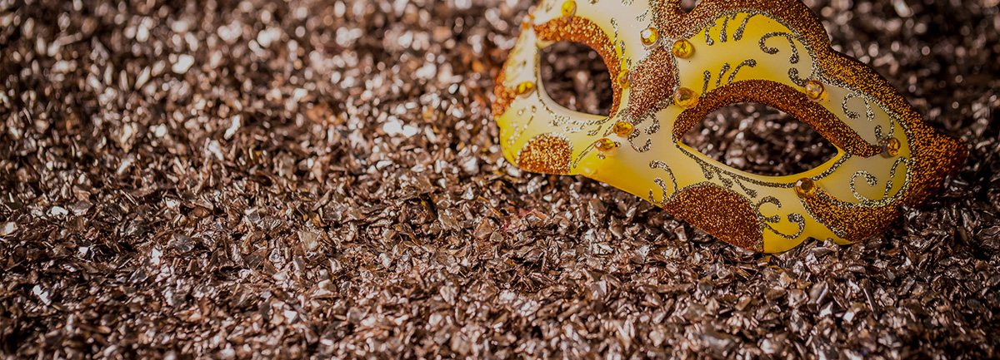

과학의 비밀을 탐구하는 ARIA
Exploring
secrets
for your science
Who we are
Korea’s
national core facility
for analytical sciences
ARIA를 통해 연구장비의 정보를 손쉽게 얻을 수 있을 뿐만 아니라,
전문가 소개와 연구성과 등 다양한 콘텐츠도 제공됩니다.
뿐만 아니라 ARIA는 연구자들의 노력과 성과를 공유하는 공간을 제공합니다.
연구자들의 연구 성과를 게시하고 공유함으로써 다른 연구자들과의 협업 기회를 확대할 수 있습니다.
또한 연구자들 간의 지식 교류를 통해 연구의 질을 향상시킬 수 있습니다.

Our values
The way we do things
-
People first
ARIA는 언제나 사람이 먼저입니다.
사람과 사람이 만났을 때 더 좋은 방향으로
나아가길 희망합니다. -
Further
togetherARIA는 언제나 사람이 먼저입니다.
사람과 사람이 만났을 때 더 좋은 방향으로
나아가길 희망합니다. -
Making it
realARIA는 언제나 사람이 먼저입니다.
사람과 사람이 만났을 때 더 좋은 방향으로
나아가길 희망합니다. -
Trusted
ARIA는 언제나 사람이 먼저입니다.
사람과 사람이 만났을 때 더 좋은 방향으로
나아가길 희망합니다.
Aria Story
-
Opera
오페라는 독립적인 한곡의 노래라기 보다는
한편의 극에서 스토리 진행에 꼭 필요한
부분에서 활용됩니다.한국기초과학지원연구원이 과학발전을 위해 진행하는 일은
오페라와 같이 종합적이고 독창적인 예술작품을 만들어 가는
과정과 같습니다. -

ARIA
오페라나 오라토리오의 극적인 내용을
돋보이기 위한 독주를 말합니다.한국기초과학지원연구원은 오페라의 아리아 처럼
다른 이들이 하지 못한 최고의 기술과 창의력으로
한국 과학 기술 발전에 기여합니다. -
Ensemble
국 ·내외 다양한 과학자들이 각자의 연구에서
최고의 결과물을 만들어 나가는 여정에
ARIA가 함께 동반하겠습니다.한국기초과학지원연구원은 우리나라 기초과학의 발전과
연구자들의 역량 강화를 위에 언제나 최선을 다 할 것이며
늘 함께하는 친구가 되겠습니다.
한단계 더 진보할 수 있기를 희망합니다.
아리아
브랜드아이덴티티
KBSI 분석 연구를 위한 지능형 아키텍처 BI 'ARIA'는 Analytical Research Intelligent Architecture의 이니셜을 조합한 BI로'분석연구지능아키텍처'를 의미하며, 첨단 분석 연구를 위한 생동하고 확장하는 아키텍처 구조를 가진 지능형 아키텍처를 지향 한다는 의미의 내포와 'AR'그룹에 주황(orange)의 도트 확장은 첨단과학의 확장성과 첨단과학의 강력한 영향력을 내포합니다.
BI 소개 바로가기